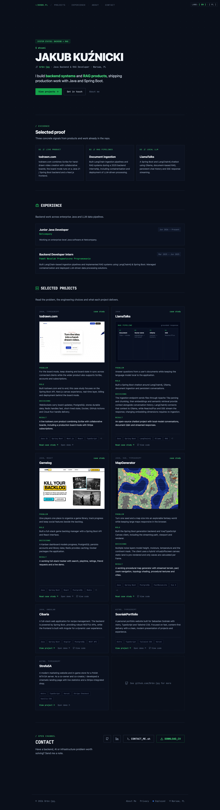
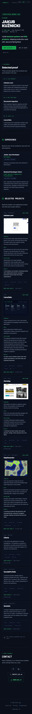
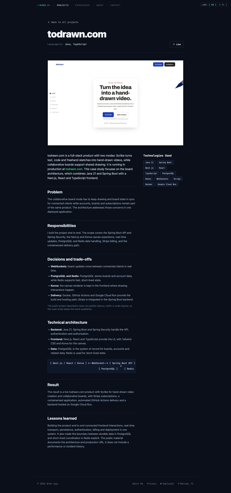
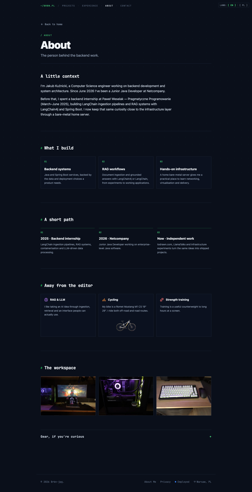

full audit // SEO + GEO
Portfolio, które działa.
Portfolio, które trzeba lepiej znaleźć.
Audyt techniczny, treściowy i wizualny portfolio osobistego brbn.pl. Sprawdzono produkcję, aktualny build Astro, indeksowalność, dane strukturalne, wydajność i gotowość na wyszukiwarki AI.
BASELINE AUDYTUWynik 79/100 opisuje stan zastany z dnia 15.09.2026. Rekomendacje są zapisane jako plan wdrożenia; po wdrożeniu hosta i zmian treści trzeba ponowić crawl oraz pomiary.
00 / orientacja
Spis treści
Raport jest samodzielnym plikiem HTML. Działa lokalnie, bez zewnętrznych bibliotek i zasobów.
01 / scoring
Wynik według kategorii
Wynik ważony odzwierciedla znaczenie każdego obszaru dla portfolio osobistego i jego widoczności w klasycznym oraz generatywnym searchu.
waga 22% · solidne fundamenty, host do ujednolicenia
Treść i E-E-A-T
67On-page SEO
88Schema.org
91Wydajność
99GEO / AI readiness
65Obrazy
7502 / signal check
Kluczowe ustalenia
20 indeksowalnych URL-i, szybki statyczny build i kompletna wersja językowa tworzą mocny punkt wyjścia.
Największy sygnał techniczny
Apex https://brbn.pl/ zwraca 307 do https://www.brbn.pl/, ale canonicale, sitemap, hreflang, OG i JSON-LD wskazują host bez www. To rozproszony konflikt sygnałów na całym serwisie.
Największa szansa treściowa
Todrawn, LlamaTalks i MapGenerator mają strukturę problem → rola → decyzje → rezultat. Dodanie prawdziwych pomiarów, dat, kompromisów i sposobu weryfikacji zmieni opis technologii w dowód kompetencji.
| Sygnał | Zaobserwowany fakt | Znaczenie |
|---|---|---|
| Host | Apex odpowiada 307 i kieruje na www; 20 canonicali, wpisów sitemap i hreflangów wskazuje apex. | Sprzeczne sygnały indeksacyjne na każdej stronie. |
| CTA | Repozytorium Cibaria Brbn-jpg/Cibaria-Recipe-Manager zwraca 404; stare demo Gamelog wymaga redirectu. | Utrata zaufania przy weryfikacji portfolio. |
| Treść | SosniakPortfolio ma 231/235 słów, a StrefaSA 285/278 słów (EN/PL); brakuje zakresu roli i dowodów rezultatu. | Słaba cytowalność i mniejsza wartość rekrutacyjna. |
| Wydajność | Lighthouse na buildzie produkcyjnym: 99 mobile, 100 desktop, LCP 1,9 s / 0,4 s, TBT 0 ms, CLS 0. | Fundament techniczny nie wymaga pilnej optymalizacji. |
| GEO | Próby site: i zapytania brandowe nie pokazały portfolio; wyniki wskazały treści Todrawn przypisane Jakubowi. | Sygnał do sprawdzenia w GSC, nie dowód braku indeksacji. |
03 / triage
Priorytety napraw
Brak problemu Critical, który blokowałby całą witrynę. Kolejność wynika z wpływu na indeksację, zaufanie i konwersję rekrutacyjną.
P0 · brak blokeraP1 · wysoki wpływP2 · średni wpływP3 · niski wpływ
P0 Brak blokera indeksacji
Nie wykryto problemu, który zatrzymywałby renderowanie lub indeksację całej witryny.
Status: czysto. Kolejny poziom to eliminacja sygnałów niejednoznacznych.
P1 Ujednolicić canonical host
Przyjąć https://www.brbn.pl, przepisać absolutne URL-e i ustawić permanentny jeden-hop redirect z apexu.
Dowód: redirect 307 + canonical/sitemap/robots/JSON-LD na apexie.
P1 Zmierzyć realną widoczność
Zweryfikować host w GSC i Bing Webmaster Tools, przesłać finalną sitemapę, sprawdzić pięć kluczowych URL-i w URL Inspection.
Ograniczenie audytu: brak dostępu do GSC, CrUX i GA4.
P1 Wzmocnić case studies
Dodać 2–4 źródłowe fakty, zakres odpowiedzialności, kompromis, skalę i opis sposobu sprawdzenia wyniku.
Największy wpływ na E-E-A-T, SXO i cytowalność przez modele.
P2 Naprawić CTA Cibaria
Repozytorium Brbn-jpg/Cibaria-Recipe-Manager zwraca 404. Poprawić, upublicznić albo usunąć link oraz codeRepository ze schema.
Test 10 kluczowych linków zewnętrznych.
P2 Rozbudować dowody wizualne
Cztery z siedmiu projektów nie mają screenshotu produktu, a wszystkie strony używają jednego ogólnego obrazu OG.
Wpływ: zaufanie użytkownika i widoczność w Google Images/social previews.
P2 Poprawić dostępność
Podnieść kontrast tekstów pomocniczych i uzgodnić accessible name logo z widocznym /BRBN.PL.
Lighthouse Accessibility 96: color contrast + label-content-name mismatch.
P3 Optymalizacje wspierające
Przygotować WebP/AVIF i srcset, skrócić dwa meta description, ustawić bezpośredni adres demo Gamelog. IndexNow dopiero przy częstych publikacjach.
Nie są to blokery ruchu ani indeksacji.
04 / SEO detail
Szczegóły SEO
Witryna jest statyczna, semantyczna i dobrze opisana. Korekty dotyczą spójności sygnałów i jakości dowodów.
Techniczne fundamenty
- Treść jest obecna w pierwszej odpowiedzi HTML; statyczny Astro build nie wymaga JS do indeksowania.
- 20/20 URL-i z sitemapy zwraca 200 na serwowanym hoście.
- Hreflang PL/EN jest kompletny i wzajemny, z x-default; slugi /about ↔ /pl/o-mnie są obsłużone.
- 404 ma noindex, follow; strony indeksowalne mają index, follow i max-image-preview:large.
- Robots zezwala wyszukiwarkom i crawlerom AI na treść, blokując /cv/.
Ryzyka techniczne
- Canonical, hreflang, sitemap, JSON-LD, OG i llms.txt korzystają z hosta przeciwnego do redirectu.
- Disallow /cv/ nie gwarantuje usunięcia PDF-ów z indeksu; dla pewnego noindex potrzebny jest X-Robots-Tag na odpowiedzi PDF.
- Brak CSP, X-Content-Type-Options, Referrer-Policy i ochrony przed framingiem.
- Bez GSC nie da się potwierdzić Google-selected canonical ani statusu każdej strony.
| Kontrola | Wynik | Ocena |
|---|---|---|
| Indeksowalne strony | 20 | komplet sitemapy |
| Status 200 na www | 20 / 20 | bez błędów |
| Unikalny title | 20 / 20 | bez duplikatów |
| Unikalny description | 20 / 20 | 2 powyżej 160 znaków |
| Dokładnie jeden H1 | 20 / 20 | spójna hierarchia |
| Strony poniżej 300 słów | 4 | SosniakPortfolio i StrefaSA |
On-page i treść
Home ma 826 słów, jasną propozycję wartości, dowody i CTA. Dwujęzyczność obejmuje treść, nie tylko chrome. Słabsze projekty wracają do list funkcji i technologii. Celem nie jest sztywna liczba słów, lecz komplet: problem, rola, decyzje, wynik i dowód.
E-E-A-T i autorstwo
Autor jest spójny w JSON-LD, GitHubie i LinkedIn, a Todrawn dostarcza zewnętrzny sygnał autorstwa. Wzmocnij go linkiem z profilu autora oraz dodaj na case studies widoczną datę i metodę weryfikacji, jeśli te dane są utrzymywane.
05 / entity graph
Schema.org
Wynik 91/100. Graf encji jest spójny; następne zmiany powinny dodawać wyłącznie dane, które mają źródło w projekcie.
Obecne encje
Person,WebSite,ImageObjectiProfilePagena home.- Stałe
@id,sameAsdo GitHub i LinkedIn,worksFor,hasOccupationiknowsAbout. mainEntitydla stron projektów orazBreadcrumbList.- Brak wymyślonych ocen, cen i dat.
Rekomendowane rozszerzenia
- Po wyborze hosta przepisać wszystkie
@idna docelowy host. - Dodać
image/screenshotdo projektu po dodaniu prawdziwego assetu. - Dodać
inLanguageoraz utrzymywanedatePublished/dateModified. - Usunąć martwy
codeRepositoryCibaria.
06 / lab data
Wydajność i Lighthouse
Statyczny build produkuje bardzo szybki HTML. Wyniki poniżej są laboratoryjne; bez CrUX nie opisują p75 realnych użytkowników.
| Profil | Performance | FCP | LCP | TBT | CLS | Transfer |
|---|---|---|---|---|---|---|
| Mobile · production build | 99 | 1,5 s | 1,9 s | 0 ms | 0 | 205 KiB |
| Desktop · production build | 100 | 0,3 s | 0,4 s | 0 ms | 0 | 996 KiB |
| SEO / Best Practices | 100 / 100 | Accessibility 96: kontrast oraz accessible name logo | ||||
Co działa
FCP i LCP są poniżej progów ostrzegawczych, TBT i CLS wynoszą zero, a różnica transferu wynika z lazy loadingu oraz viewportu. Produkcja nie ma kosztu dev toolbaru.
Mała rezerwa
Lighthouse wskazał około 33 KiB możliwego nieużywanego JS w kliencie formularza/React. Priorytet pozostaje niski przy obecnych wynikach.
07 / generative search
GEO i gotowość na AI
Wynik ręcznie skorygowany do 65/100: boty mają dostęp do treści, ale modele potrzebują mocniejszych, weryfikowalnych faktów.
Co modele mogą już odczytać
OAI-SearchBot,ChatGPT-User,PerplexityBot, Claude i GPTBot są dozwolone.llms.txtma 13 faktów, 12 linków i trzy sekcje.- Server-rendered HTML i JSON-LD budują spójny graf osoby, witryny i projektów.
- Warianty nazwiska z diakrytykami, bez diakrytyk i handle są konsekwentne.
- Case studies mają semantyczne bloki Problem / Role / Decisions / Result.
Co ogranicza cytowalność
- Linki w
llms.txtprowadzą przez redirect hosta. - Rezultaty nie podają wystarczającej liczby danych, dat, ograniczeń i metod pomiaru.
- Widoczny tekst nie pokazuje autora i daty przy każdym case study.
- Próbne wyszukiwania marki nie zwróciły portfolio; znaleziono treści Todrawn przypisane Jakubowi.
- Brak pomiaru referralów z ChatGPT/Perplexity i logów botów.
Nie dodawaj sztucznego FAQ ani pytań w nagłówkach wyłącznie dla wyniku narzędzia. Lepszy sygnał dają samodzielne streszczenia 100–160 słów, z wynikiem, metodą sprawdzenia i ograniczeniem.




08 / execution
Roadmapa i KPI
Najpierw spójność indeksacji, następnie dowody kompetencji i widoczność marki, potem optymalizacje wspierające.
Indeksacja
- Wybrać canonical host i ustawić 308.
- Przepisać sitemap, robots, llms i JSON-LD.
- Naprawić Cibaria i demo Gamelog.
- Zweryfikować GSC/Bing.
Dowody
- Wzmocnić Todrawn, LlamaTalks i MapGenerator.
- Dodać fakty, kompromisy i metodę sprawdzenia.
- Rozbudować lub zdegradować słabsze projekty.
- Dodać brakujące screenshoty.
CTR + schema
- Przygotować 7 indywidualnych OG images.
- Dodać image/screenshot i inLanguage.
- Wygenerować WebP/AVIF i srcset.
- Poprawić kontrast i accessible name.
Autorytet
- Dodać nagłówki bezpieczeństwa.
- Połączyć portfolio z profilem autora Todrawn.
- Ujednolicić GitHub i LinkedIn.
- Monitorować boty i AI referrals.
| KPI | 30 dni | 90 dni |
|---|---|---|
| URL-e z poprawnym canonicalem | 20 / 20 | 20 / 20 |
| URL-e indeksowane wg GSC | baseline + trend | ≥ 90% zgłoszonych |
| Priorytetowe case studies z dowodami | 3 / 3 | 3 / 3 utrzymywane |
| Martwe CTA | 0 | 0 |
| Lighthouse Performance mobile | ≥ 95 | ≥ 95 |
| Lighthouse Accessibility | 100 | 100 |
| Projektowe OG images | 7 / 7 | 7 / 7 |
| Zewnętrzne profile linkujące do canonicala | ≥ 2 | ≥ 3 |
09 / audit trail
Metodologia i ograniczenia
Raport łączy pomiary produkcji, lokalnego builda i inspekcję kodu aktualnego mastera.
Zakres pomiaru
- Pełny crawl sitemapy produkcji i lokalnego builda.
- Nagłówki HTTP oraz ręczna kontrola redirectów.
- Lighthouse mobile/desktop na produkcyjnym buildzie Astro.
- Walidatory techniczne, treściowe, GEO, obrazów i schema.
- Playwright desktop/mobile po załadowaniu lazy assets.
- Test dziesięciu kluczowych linków oraz próbne zapytania brand/site.
Dane, których nie było
Brak dostępu do Google Search Console, Bing site data, GA4 i CrUX. Konfiguracja Moz/Bing/Common Crawl nie dostarczyła wiarygodnych danych domenowych: Moz zwrócił błąd API 400, Bing nie ma zweryfikowanej witryny, a Common Crawl nie miał cache. Raport nie podaje zmyślonych wartości autorytetu ani indeksacji.